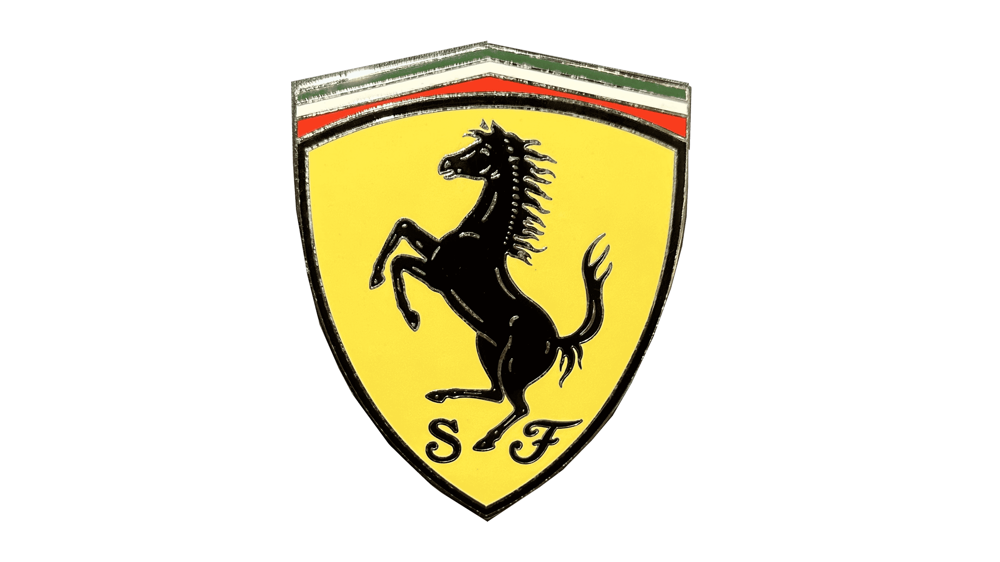

Identification
Marque: FERRARI
Pays: Italie
Date du 1 er GP: 1950 GP de Monaco
Palmares: 1125 GP
77 Saisons
248 Victoires
254 Poles positions
265 Meilleurs tours
1125 GP
839 Podiums
87 Doublés

Les Modéles de 1990 à 1999
641-1990

Développement aggressif avec la 1er boite semi automatique , recrutement d'Alain Prost ferrari finira 2éme suite à l'episode célebre du Duel Prost/Senna. A.Prost P2 ,N.Mansell P5
Moteur: V12 3497 cm³, 680 Ch à 12750tr/Mn, 7 vitesses, poids 505kg
Modéle presenté:Edition Fabbri echelle 1/43 ,#1 Alain Prost
642-1991

Crise interne,restructuration, mais concept la 642 ne sera aligné que une demi saison, Ferrari se cherche pour le titre aprés lequel elle court. C'est a nouveau un duo 100% français pour la saison.Ferrari P3 A.Prost P5,J.Alesi P7
Moteur: V12 3499 cm³, 725 Ch à 13800tr/Mn, 7 vitesses, poids 505kg
Modéle presenté:Edition Fabbri echelle 1/43 ,#27 Alain Prost
643-1991

En pleine tourmente interne la 643 fera la deuxime partie de la saison 1991 mais elle sera decevante au point qu'Alain Prost la critique et se fait limogé . Ferrari P3 A.Prost P5,G.Morbidelli P24 ,J.Alesi P7
Moteur: V12 3497 cm³, 725 Ch à 14500tr/Mn, 7 vitesses, poids 505kg/p>
Modéle presenté:nous sommes à la recherche de ce modele 1/43
F92A-1992

estucturation est lancé L. Di Montzemolo rend la direction, N.Lauda est consultant.Pioltes: J.Alesi, Ivan Cappelli qui sera remplacer pour les2 dernier par Nicolas Larini Ferrari P4, N.Larini P29,I Capelli P13 ,J.Alesi P7
Moteur: V12 3497 cm³, 735 Ch à 14800tr/Mn, 7 vitesses, poids 505kg
Modéle presenté:nous sommes à la recherche de ce modele 1/43
F93A-1993-

Nouvelle saison compliqué G.Berger est de retour et J Todt est recruté, mais malgré ça Ferrari ne gagne pas P4, J Alesi P6 ,G Berger P8
Moteur: V12 3497 cm³, 740 Ch à 14500tr/Mn, 6 vitesses, poids 505kg
Modéle presenté:nous sommes à la recherche de ce modele 1/43
F412T1-1994

Les saison s'enchaine est se ressemble 1 victoire seulement Ferrari est en peine a retrouver les sommets P4 J Alesi P5 ,G Berger P3
Moteur: V12 3497 cm³, 740 Ch à 14500tr/Mn, 6 vitesses, poids 505kg
Modéle presenté:Edition Fabbri echelle 1/43 #27 Jean Alesi
412T2-1995

Toujours en peine alors qu'un certain M.Shumacher gagne chez Benetton les difficultés continue Ferrari P4, J Alesi P5 ,G Berger P6
Moteur: V10 2997 cm³, 730 Ch à 14500tr/Mn, 7 vitesses, poids 525kg
Modéle presenté:nous sommes à la recherche de ce modele 1/43
F310-1996

LLe plan de developpement de J.Todt se met en place recrutement de M.Shumacher, E.Irvine en pilote 3 victoires Ferrari P2, M.Schumacher P3 ,E Irvine P10
Moteur: V10 2997 cm³, 760 Ch à 14800tr/Mn, 7 vitesses, poids 600kg
Modéle presenté:Edition Fabbri echelle 1/43 #1 Michael Schumacher
F310B-1997

Les tifosi mettent la pression Ferrari court apres le titre depuis 14 ans Ross Brawn arrive, Schumacher sous pression comme l'irreparable a Jerez est se fait déclassé , Ferrari P2 M.Schumacher DSQ, E Irvine P7
Moteur: V10 2997 cm³, 760 Ch à 14800tr/Mn, 7 vitesses, poids 600kg
Modéle presenté:nous sommes à la recherche de ce modele 1/43
F300-1998

La reconstruction est longue mais les performance sont là 6victoires P2 au championnat M.Schuacher P2, E Irvine P4
Moteur: V10 2997 cm³, 790 Ch à 15000tr/Mn, 7 vitesses, poids 600kg
Modéle presenté:Edition Fabbri echelle 1/43 #4 Eddie Irvine
F399-1999

La légende est en cours et la liberation sera au rendez vous aprés 16 d'attente Ferrari renoue avec son 7eme titre malgre une Absence de MSchumacher durant la saison suite a un accident M.Schumacher P5, E.Irvine P2, M.Salo P10
Moteur: V10 2997 cm³, 805 Ch à 16500tr/Mn, 7 vitesses, poids 600kg
Modéle presenté:nous sommes à la recherche de ce modele 1/43